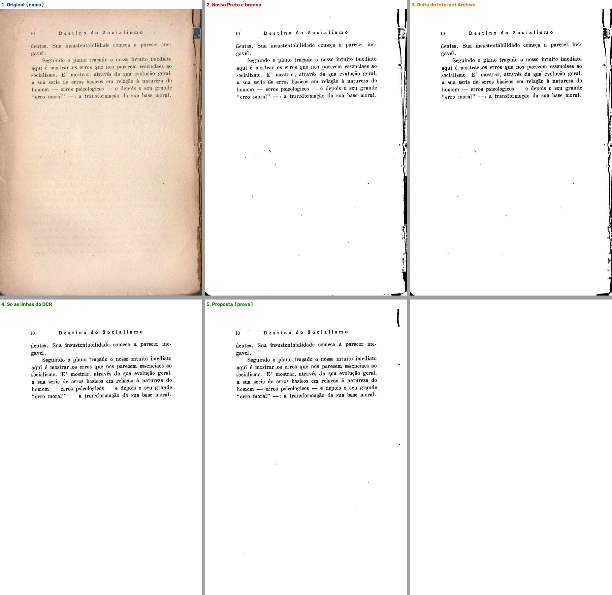
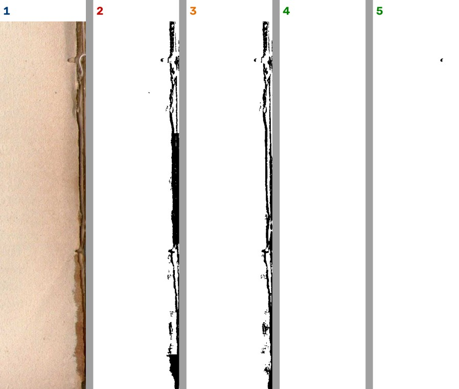
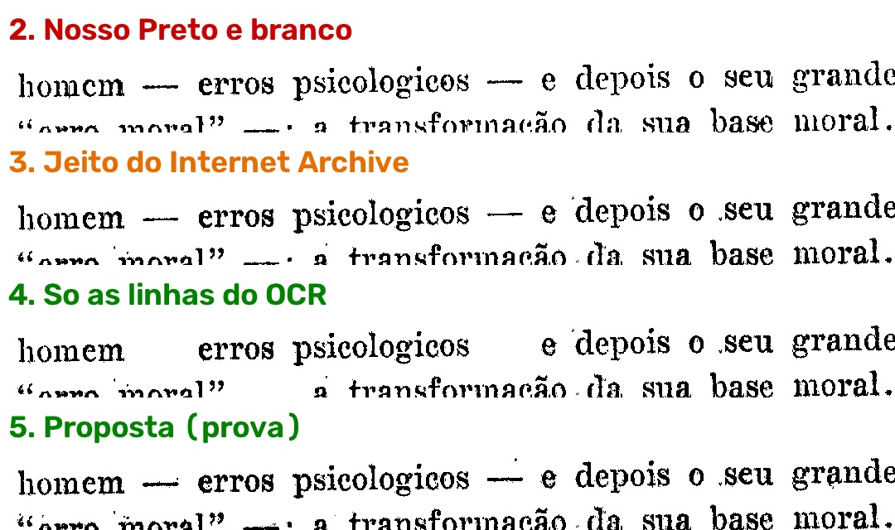
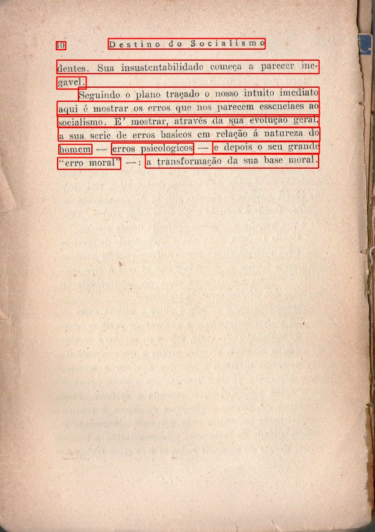

Para o Samuel, 10/11/2026. Pedido: "coloque um agente para fazer pesquisas de como eles fazem por favor."
1 = original · 2 = nosso Preto e branco · 3 = jeito do Internet Archive · 4 = só as linhas do OCR · 5 = proposta.

A beirada da lombada, ampliada: no 2 e no 3 ela vira preto; no 5 some.

Os travessões: "só as linhas do OCR" (4) perde os travessões entre as palavras; a proposta (5) os guarda.

As linhas que o OCR achou, em vermelho:

O texto completo da pesquisa vem a seguir.
Data: 10/11/2026 · Quem: agente pesquisador · Pedido: gerente, a partir do teste guiado de 10/11 (sessão 5, Destino do socialismo, página 18 de 193, Preto e branco, "Limpeza cuidadosa (leve)").
As palavras do Samuel (10/11/2026): - "deixe anotado, hoje não temos como reconhecer essa partes que são marcas da folha ou folha meio dobrada ou manchas na folha que quando vão para o preto e branco fica essa mancha, o ocr está funcionando? porque era para ele preservar as letras e passar e deixar a folha branca" - "eu errei é internet arquive, sim é isso que temos que fazer, coloque um agente para fazer pesquisas de como eles fazem por favor."
Nada do programa foi mexido. Li o código-fonte do Internet Archive (três repositórios, copiados para D:\programas\EditorImpressao-arquivos\pesquisa-internet-archive\fontes\) e a documentação deles. Fiz uma prova pequena, sem janela, numa cópia da página do teste (...\pesquisa-internet-archive\experimento\): o nosso Preto e branco, o jeito do Internet Archive refeito em poucas linhas e uma proposta. Nada foi instalado no .venv (só usei o .venv para rodar, como leitura). O PDF do Samuel foi só lido.
Como ler as marcas: [lido] = li no código ou no documento de fora · [medido] = rodei neste PC e olhei as imagens · [dedução] = conclusão minha, não conferida.
Esta pesquisa não repete a de 28/09 (fase1-1.1-camadas-internet-archive.md, como os PDFs deles estão montados) nem a de 05/10 (fase2-misto-letras-fora-do-ocr.md, a tinta fora das linhas do OCR). Ela vai antes da máscara (o corte da página) e depois (o que eles fazem com o que sobra), que é onde está a resposta para a mancha da beirada.
autocrop); (b) a máscara de tinta usa um preto e branco sensível só dentro das linhas do OCR e cauteloso no resto da página, que não pega mancha lisa; (c) o que escapa não vira preto: no PDF colorido deles, cada ponto da máscara leva a cor original (a beirada marrom continua marrom) e o papel de verdade fica por baixo [lido].--bw-pdf deles, que é a mesma máscara, em preto puro [lido]. Nesse modo, a beirada dobrada também sai preta: na prova, a máscara deles fez na lombada praticamente a mesma faixa preta que o nosso Preto e branco (1,07% da página fora das linhas, contra 1,21% no nosso) [medido].| O que é | Licença | Roda aqui (Windows, Python 3.14, GTX 1650)? | Roda no notebook do Kaique? |
|---|---|---|---|
archive-pdf-tools (internetarchivepdf/mrc.py, recode.py; cython/sauvola.pyx, cython/optimiser.pyx): a máscara de tinta |
AGPL-3.0 (menos pdfrenderer.py, Apache-2.0) [lido] |
Não como pacote: o PyPI tem versão pronta para Windows só até o Python 3.13 (1.5.7, cp39 a cp313); no 3.14 teria de compilar o Cython, e ele chama o jbig2 (jbig2enc) e precisa do hOCR do Tesseract [lido no PyPI, 10/11]. A ideia sim: refeita em numpy/OpenCV, roda [medido] |
Sim, a ideia refeita (só processador) [dedução] |
autocrop (autoCropScribe.c, docs/algorithm.md): o corte da folha do Internet Archive |
GPL-2.0 ("Software license GPL version 2", no topo do arquivo) [lido] | Não direto: C de 2008 com Leptonica 1.68 e Makefile de Linux. Serve de referência; o nosso corte (2.13) já faz o mesmo papel |
— |
archive-hocr-tools (hocr/parse.py, hocr_page_to_word_data) |
AGPL-3.0 [lido no setup.py] |
Não precisamos: as linhas já vêm do docTR | — |
| Tesseract 5 (o OCR que o Internet Archive usa) | Apache-2.0 | Sim, já instalado e desligado na detecção (item 1.3) | Sim |
docTR fast_base (OnnxTR), já no programa |
Apache-2.0 | Sim: 1,5 s nesta página, sem placa de vídeo [medido] | Sim (mais lento) [dedução] |
| Sauvola do DoxaPy / scikit-image, OpenCV (já no programa) | CC0 / BSD / Apache-2.0 | Sim [medido] | Sim |
ScanTailor Advanced, "preencher as margens" (OutputGenerator.cpp, fillMarginsInPlace) |
GPL-3.0 | Já ligado ao programa (2.14, "pintar de branco") | Sim |
Os livros são fotografados na máquina Scribe: o livro fica aberto num berço em "V" e duas placas de vidro em "V" apertam as páginas contra o berço; a junção das placas fica em cima da lombada (autocrop/docs/algorithm.md, seção "Find binding edge": "The Scribe scanner glass platen is used to press the pages flat"). Ou seja: a dobra da beirada já sai bem menor na foto deles do que num scanner de mesa. Isso não é programa, é o aparelho; nós não temos como copiar.
autocrop)Repositório internetarchive/autocrop (escrito em 2008, "deployed in 2011", diz o README). O programa autoCropScribe grava o recorte e o ângulo no scandata.xml do livro, e o operador ainda pode corrigir à mão (o "republisher"; num registro de exemplo, visto só no resultado da busca, aparecem os campos pages_crop_touched e pages_skew_touched). Passos, em docs/algorithm.md e autoCropScribe.c:
CalculateTreshInitial).RemoveBackground{Top,Bottom,Outer}, em autocrop_remove_bg.c).FindBindingEdge2).pixFindSkew) se a confiança passar de 2; senão, pela lombada.FindOuterEdgeUsingCleanLines).RemoveBlackPelsBlockRow/Col): uma régua de 80% do lado e 3 pontos de largura anda para dentro até achar um trecho com menos de 5 pontos pretos. O corte para onde o papel fica limpo.Por que importa para a mancha da beirada: a lombada escura, a beirada estragada e as folhas de trás saem da imagem antes de qualquer preto e branco. O que o Samuel viu nas laterais da página 18 é justamente o que esse passo tira.
Documentação: https://archive.org/developers/ocr.html. O módulo de OCR deles usa o Tesseract 5.3; respeita o scandata.xml (páginas marcadas para sair ficam fora); o preto e branco que o Tesseract faz por dentro (Otsu, ou Sauvola quando estoura o tempo) serve só para ler, não vai para o PDF. A saída é o hOCR: cada palavra com a caixa e uma confiança de 0 a 100; as palavras ficam agrupadas em linhas (archive-hocr-tools, hocr/parse.py, hocr_page_to_word_data).
archive-pdf-tools)Código lido em 10/11/2026, versão 1.5.7, commit 68c7a21 de 28/10/2026. Função central: create_mrc_hocr_components em internetarchivepdf/mrc.py. Mesmo desenho da leitura de 28/09, agora com os números e o que cada passo faz com a sujeira:
| Passo | Onde | O que faz | O que acontece com mancha e beirada |
|---|---|---|---|
| 1. Máscara das linhas | create_hocr_mask |
Para cada linha do hOCR: pula se estiver vazia ou se a confiança média das palavras for menor que 20. Dentro da caixa da linha, Sauvola com k = 0,1 (sensível), janela = DPI/4 (75 pontos a 300 DPI). Testa a linha normal e invertida (letra clara em fundo escuro) e fica com a que tem menos de 20–30% de tinta e menos ruído (mean_estimate_sigma) |
Uma "linha" que o OCR achou numa mancha tem texto de lixo e confiança baixa: é jogada fora. Fora das linhas, nada deste passo entra |
| 2. Máscara da página inteira | create_threshold_mask |
Se a página tem ruído (sigma > 1), borra de leve (sigma × 0,1). Depois Sauvola na página toda com k = 0,34 (cauteloso), mesma janela. Soma à máscara das linhas (MIX_THRESHOLD = True) |
O Sauvola compara cada ponto com a média em volta. Mancha lisa (amarelado, mancha d'água, verso claro) tem a média em volta quase igual a ela: não entra. Beirada com borda dura (o papel claro encostando numa faixa escura) entra na orla; se a faixa for mais estreita que a janela (≈ 6 mm), entra inteira |
| 3. Limpar pontinhos | fast_mask_denoise (cython/optimiser.pyx), padrão --denoise-mask fast |
Ponto de tinta com menos de 4 vizinhos de tinta num quadrado 5×5 sai | Some a poeira solta |
| 4. Camada de cima | optimise_rgb2 |
A cor original da página onde a máscara diz "tinta" | O que escapou para a máscara (a orla da beirada) sai marrom como é, não preto |
| 5. Fundo | optimise_rgb2 com a máscara invertida; --bg-downsample |
A página com a tinta apagada, reduzida (3× nos nossos livros) | A mancha fica aqui, embaixo, visível como no papel |
| 6. Montar o PDF | recode.py, insert_images_mrc |
Fundo primeiro, camada de cima com a máscara por cima | O PDF parece a foto do papel |
| Modo preto e branco | recode.py, force_1bit_output (opção --bw-pdf em bin/recode_pdf) |
Grava só a máscara, invertida, em 1 bit | Tudo o que entrou na máscara sai preto, inclusive a orla da beirada |
O Sauvola deles (cython/sauvola.pyx, binarise_sauvola) é o de livro-texto: o ponto é tinta quando é mais escuro que média × (1 + k × (desvio / 128 − 1)). Com k = 0,34 numa área lisa (desvio perto de zero), o ponto precisa ser 34% mais escuro que a média em volta: por isso a mancha lisa não entra.
| Coisa no papel | Onde é tratada | Resultado no PDF colorido deles | No --bw-pdf |
|---|---|---|---|
| Lombada, beirada escura, folhas de trás | Corte (autocrop), antes da máscara | Some (fica fora da página) | Some |
| Dobra da beirada | Vidro na foto + corte | Fica no fundo; a orla dura entra na máscara com a cor marrom | Orla preta, se sobrou dentro do corte |
| Mancha lisa, amarelado, mancha d'água | Sauvola k = 0,34 não pega | Fica no fundo, visível | Some |
| Verso transparecendo (cinza claro) | Idem | Fica no fundo | Some, quando é claro; o escuro entra |
| Ilustração | Os traços entram pelo passo 2; os tons ficam no fundo | Inteira (traço em cima, tom embaixo) | Só os traços, sem os tons |
| "Linha" de texto falsa numa mancha | Confiança do Tesseract < 20 | Não ganha o Sauvola sensível | Idem |
Lição [dedução]: o Internet Archive nunca precisou "reconhecer mancha", porque o produto dele não é papel branco: é papel como está, comprimido. Quem quer papel branco (nós, no Preto e branco e no "Tirar o fundo") precisa de um passo que eles não têm: decidir o que fazer com o que está fora das linhas e não é gravura.
Lido no nosso código (core/filtros.py, filtro_preto_e_branco, na versão de teste obra-2026-10-26, commit cc5d985) e medido na cópia da página:
autocrop]escolher_algoritmo_automatico). Nesta página o automático escolheu Sauvola [medido].core/linhas_do_texto.py) e são usadas no "Só as letras" e no "Para revisar" (core/pipeline.py, _filtrar_no_misto), não no Preto e branco comum [lido].--bw-pdf deles; a diferença do PDF colorido deles (a cor original na orla) não existe no nosso Preto e branco.Medido nesta página (só o filtro, sem o caminho inteiro; ver 5.3): a beirada da lombada saiu como faixa preta tanto no nosso Preto e branco quanto na máscara completa do Internet Archive. Copiar a máscara deles sozinha não teria resolvido o caso do Samuel; o que os salva é o corte antes e a cor original depois.
...\pesquisa-internet-archive\experimento\a-pagina-esquerda.png.core.filtros.filtro_preto_e_branco(pagina, 50, True, "auto") da versão de teste (força de fábrica). Também com "st_pouco" (a "Limpeza cuidadosa (leve)") e em 150 e 100 DPI: a lombada sai preta em todos (z3-nosso-em-varias-resolucoes.png).core.ocr_doctr.DetectorDoctr().segmentar(pagina) (o mesmo docTR do programa)....\experimento\resultado.json.| Jeito | Tinta na página | Tinta fora das linhas (sujeira) | Tinta dentro das linhas |
|---|---|---|---|
| Nosso Preto e branco (automático = Sauvola) | 2,86% | 1,21% | 1,64% |
Internet Archive, máscara completa (--bw-pdf) |
2,98% | 1,07% | 1,91% |
| Internet Archive, só a página inteira | 2,58% | 1,07% | 1,51% |
| Só as linhas do OCR | 1,91% | 0% | 1,91% |
| Proposta | 2,04% | 0,05% | — |
Tempo: docTR 1,5 s na página; o nosso filtro 0,35 s. A proposta não foi cronometrada (são as mesmas contas do Sauvola, mais uma contagem de peças; [dedução]: dezenas de milissegundos).
As imagens estão no relatório (relatorios/pesquisa-internet-archive-2026-11-10/imagens/):
| Peça | Usar direto? | Estudar e reescrever? |
|---|---|---|
| A ordem do Internet Archive: cortar a folha → achar as linhas → preto e branco sensível dentro, cauteloso fora → limpar pontinhos | — | Sim. É a espinha do 1.4. Todas as peças já existem no programa (corte 2.13/2.14, docTR, Sauvola do DoxaPy, limpar pontinhos) |
create_hocr_mask (linha normal × invertida, < 20 de confiança) |
Não (AGPL e preso ao hOCR do Tesseract) | Sim, a regra da linha invertida serve para título claro em faixa escura (ver docs/pesquisa/inverter-letra-clara-2026-11-04.md) |
create_threshold_mask (k = 0,34 + borrão se ruidoso) |
Não | Sim, é a peça "cautelosa" de fora das linhas |
fast_mask_denoise |
Não | Já temos equivalente (o "Limpar a sujeira"); é um filtro 5×5 do OpenCV |
| Confiança de leitura < 20 | O docTR do programa só acha caixas, não lê: a confiança que ele dá é de "aqui tem texto", não "li bem". O Tesseract (já instalado, desligado) dá a de leitura | Usar a confiança do Tesseract, ou a da parte de leitura do docTR, só como filtro para jogar fora "linha" falsa em mancha. Não é transcrever (a transcrição é da Fase 7) — mas é pergunta para o Samuel antes [dedução] |
autocrop |
Não (C de Linux) | O nosso corte já faz isso; a regra das "linhas de corte limpas" (andar até ter menos de 5 pontos pretos) é uma régua para conferir o corte |
| Saída em duas camadas (1.6) | O archive-pdf-tools não roda no Python 3.14 em Windows |
O PyMuPDF (já no programa) põe imagem com máscara no PDF (insert_image(..., mask=...), o mesmo que o recode.py usa); a máscara em 1 bit pode ir em PNG/Flate em vez de JBIG2 (fica maior; o jbig2enc não tem versão oficial para Windows) [lido + dedução] |
| Placa de vídeo | — | Nada disto usa a placa de vídeo. Nenhum modelo que desenha: a rede (docTR) só aponta onde está a linha |
archive-pdf-tools: AGPL-3.0 (todo o código, menos internetarchivepdf/pdfrenderer.py, Apache-2.0). Obriga a abrir o código de quem usa o deles, inclusive por rede. Cabe na decisão de 17/09 (CLAUDE.md §3). Mas a recomendação é reescrever a ideia, não copiar o código: as contas são de livro-texto (Sauvola de 2000) e cabem em poucas linhas.archive-hocr-tools: AGPL-3.0. Não precisamos.autocrop: GPL-2.0 ("Copyright(c)2008 Internet Archive. Software license GPL version 2"). Traz a Leptonica 1.68 (licença tipo BSD) junto. Só referência.fillMarginsInPlace): tudo fora da caixa do conteúdo vira branco. É o nosso 2.14 ("pintar de branco"), já construído e com decisão do Samuel (o Kaique escolhe por livro entre cortar e pintar; D-559). Para a beirada da página 18, esta é a peça mais rápida de conferir [dedução].memoria/itens/1.4.md): (1) "só dentro das linhas" apaga o que o OCR não cobre (os travessões nesta página; a música no Graduale, pesquisa de 05/10); o certo é "sensível dentro das linhas, cauteloso e com regras fora"; (2) a mancha da beirada não se resolve só com a máscara: depende do corte antes (2.13/2.14). A "cor original" vale para Mágico pro, Melhorar e "Tirar o fundo"; no Preto e branco a regra do Samuel continua (vermelho sai preto).archive-pdf-tools. A máscara do 1.4 é a mesma da camada de cima; a máscara em JBIG2 não tem programa oficial para Windows, então a primeira versão seria com compressão comum (arquivo maior). Ressalva: a D-304 diz "o tamanho do arquivo depois não importa", então o 1.6 vale pela opção de fundo/cor, não pelo tamanho._chave_das_linhas), o custo novo é pequeno. Não medido.autocrop, que o descreve.68c7a21, 28/10/2026): README.rst, LICENSE, internetarchivepdf/mrc.py (create_hocr_mask, create_threshold_mask, create_mrc_hocr_components, threshold_image), internetarchivepdf/recode.py (insert_images_mrc, force_1bit_output), internetarchivepdf/const.py, cython/sauvola.pyx (binarise_sauvola), cython/optimiser.pyx (fast_mask_denoise, optimise_rgb2), bin/recode_pdf (--bw-pdf, --denoise-mask, --hq-pages)38b46ed, 2013): README, docs/algorithm.md, autoCropScribe.c, autocrop_remove_bg.csetup.py (licença), hocr/parse.py (hocr_page_to_word_data)cp313)mycotaxon1051unse_repub_corrections.log (campos pages_crop_touched, pages_skew_touched; vistos só no resultado da busca, não abri)obra-2026-10-26 (cc5d985): core/filtros.py (filtro_preto_e_branco, escolher_algoritmo_automatico, janela_para_altura, k_do_sauvola), core/pipeline.py (_filtrar_no_misto), core/linhas_do_texto.py, core/ocr_doctr.py, core/misto.pydocs/pesquisa/fase1-1.1-camadas-internet-archive.md, docs/pesquisa/fase2-misto-letras-fora-do-ocr.md, docs/pesquisa/fase2-mapa-scantailor.md (6.14), memoria/itens/1.4.md, memoria/itens/2.14.md, memoria/referencias/internet-archive.md, docs/plano/PLANO-DEFINITIVO.md (Fase 1; Lista de bugs, 10/11), docs/plano/DECISOES.md (D-559, D-605)relatorios/testes-guiados/2026-11-10-sessao-5/prints/03-preto-e-branco-manchas-na-beirada.png e 04-original-mesma-pagina.pngD:\programas\EditorImpressao-arquivos\pesquisa-internet-archive\experimento\ (cópia da página, imagens e resultado.json); código de fora em ...\pesquisa-internet-archive\fontes\Editor de Impressão · gerado em 10/11/2026 às 08:54